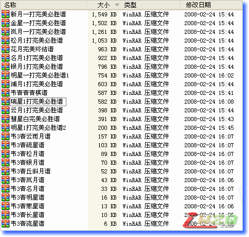
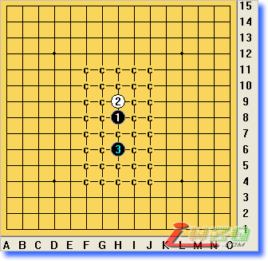

一打完美终结谱，能发吗？
#1 一打完美终结谱，能发吗？ 作者：有志青年 发表时间：2008-2-24 16:17:28

今天得到网友发来的一打完美终结谱若干，得到之后想立马放在网上与大家共享。
可，仔细打开这些棋谱一看，好恐怖，真的是恐怖呀。
例如瑞星一打终结谱

每一步都是这种终结，白棋放在哪里都是输呀。
这样的棋谱如果放出来，结果是怎样的？推动五子棋的发展，还是打击了五子棋的发展？
我内心有点烦躁，所以，先发这个帖子听听大家的意见。一个原则，谨慎些好。
【棋谱已经发布在了本站的资料区了】
#2 Re:一打完美终结谱，能发吗？ 作者：没有注册 发表时间：2008-2-24 17:12:04
发上来吧，好想见识一下呢#3 Re:一打完美终结谱，能发吗？ 作者：竹子 发表时间：2008-2-24 17:38:47
瑞星一打本来就有必胜结论了，没什么奇怪的。
如果是瑞星两打终结谱，倒确有“推动五子棋的发展，还是打击了五子棋的发展？”的问题。
#4 Re:一打完美终结谱，能发吗？ 作者：棋天大圣 发表时间：2008-2-24 17:47:35
这样的终结谱如果互相转发人手1册，那会严重打击下棋的积极性，还没下都知道结果了，而且这个结果不是通过自己的思考计算得出来的，那就算赢棋了也会觉得太没劲！还下什么五子棋啊？！［ 有志青年 于 2008-2-24 18:39:30 时奖励此帖[金币加 20 威望加1］
#5 Re:一打完美终结谱，能发吗？ 作者：棋天大圣 发表时间：2008-2-24 17:50:43
终结谱、地毯谱的出现势必将终结RIF规则，如果再不尽快出台新规则，这个棋种将会逐渐失去棋手，这几年五子棋已经走很多人了，五子棋将很快走向衰亡...
所以现在急需出台新规则,规则改革势在必行!
#6 Re:一打完美终结谱，能发吗？ 作者：行云流水 发表时间：2008-2-24 18:09:25
对于一打终结谱的公开，完全没有必要吃惊，发出来即可。就算是一些布局的二打甚至三打终结谱，合适的话，也可以发出来，供喜爱的人士学习参考借鉴。
现在大家都觉得“终结”的字眼很可怕，我倒觉得未必。从理论上来说，这是从技术上有效的促进五子棋的发展。一项竞技体育项目要进步要发展，变革是必然的道路，尽管我赞同的是渐进式变革，但是这条道路不应该成为我们的心结，而应当是我们的共识。
不过在此也要讲2句可能是多余的话。1、就算现在有人掌握了五子棋的终结全谱，问题是人的大脑容量能否记忆那么多的海量变化，就算删除1打和部分很少会下到的变化，但是如果不从变化中掌握棋的道理，仅仅是机械记忆，我不认为可以做到所向无敌。2、现在的比赛还是功利的比较多，如果把竞技纯粹是作为一项竞技而竞技，作为一种对自己的挑战和提高，那么在现有规则下，我也可以尝试已经终结以外的变化，只要你愿意我也愿意。
一切顺棋自然，水到渠成。发展要一步一步的来。
#7 Re:一打完美终结谱，能发吗？ 作者：有志青年 发表时间：2008-2-24 18:46:09
我来说说我所担心的吧。
如果发出来，有人拿着它在qq游戏中心狂砍一番，这是必然会发生的。
此时对于那些不使用软件，只是将五子棋当成娱乐的五子棋爱好者来说，将会是怎样的结果呢？
1、闪人，惹不起，还躲不起吗。
2、我也用谱，也找来棋谱，继续砍后来者。
我怕这样受到打击的是刚刚投身于五子棋的爱好者。
如果在qq上从三手到无禁都是“有棋谱就必胜”的声音，这是什么结果呢？
虽然这样的结论早就有了，也有不少人有了这样的终结谱，然而，那还只是在三手之类的高端流传着。
顾老师，最后说的一切顺其自然，也是我想的。
传播这些棋谱不是谁的错，也许传播只是加速了进程而已吧。
#8 Re:一打完美终结谱，能发吗？ 作者：无尽 发表时间：2008-2-24 19:10:41
发有注释的精简谱 可以当初学者的学习材料 那地毯谱也不重要了 就延缓一下进程吧 呵呵
可以当初学者的学习材料 那地毯谱也不重要了 就延缓一下进程吧 呵呵
#9 Re:一打完美终结谱，能发吗？ 作者：棋天大圣 发表时间：2008-2-24 19:13:29
行云流水说:就算现在有人掌握了五子棋的终结全谱，问题是人的大脑容量能否记忆那么多的海量变化，
我觉得类似这种思想要不得,未知局面和变化量是一个棋种的生命力和活力吸引力的源泉,你现在说要把终结谱公开,这样RIF规则下已经没有了未知局面,那下棋者还有多大兴趣?3手1房间还能吸引到多少人?没错,是没有人能全部记忆那么多的变化,但是如果把这个棋种变成考纯粹记忆力 那绝对是五子棋的最大不幸和悲哀!
#10 Re:一打完美终结谱，能发吗？ 作者：无尽 发表时间：2008-2-24 19:15:24
Ando好像也说过要在09年世锦赛采用新规则。的确海量棋谱记不住，但确定性带来的是乐趣的丧失，RIF规则改革势在必行了，我也支持渐进式改革（关键是要有好的方案，多研究实践，不要光说这样好那样好；如果能一蹴而就也不错，只不过从现在来看不现实）。#11 Re:一打完美终结谱，能发吗？ 作者：潇洒 发表时间：2008-2-24 19:36:09
一打很少人会给对手留，公开也不影响啊
一打作为做棋、VCT、VCF的教材也不错啊
#12 Re:一打完美终结谱，能发吗？ 作者：有志青年 发表时间：2008-2-24 19:39:04
目前还没有听到反对的声音，那，明天放出？#13 Re:一打完美终结谱，能发吗？ 作者：yoda 发表时间：2008-2-24 19:48:40
再怎么改规则都无法避免理论穷尽的研究，并且这种研究没什么门槛，任何人只要有时间有工具都能做自己需要的终结谱。理论终结不妨碍实战对弈，我这两个多月（在过去已知定式研究的基础上）已经终结了RIF半数开局的二打必胜，但实战根本记不住那些繁杂的变化，多数情况下依然要靠计算解决问题。
公布这些一打终结不会有什么负面影响，花浦月必胜公布N久了。我长期混迹在无禁高手区，每每执白对手少有标准的定式胜法。基本上很多人下棋就是一个娱乐，公布再多的终结谱还是下无禁的人最多。规则改来改去最终只是一小部分人在玩而已。
#14 Re:Re:一打完美终结谱，能发吗？ 作者：雾都少帅 发表时间：2008-2-24 19:50:17
引用：呵呵 精简谱好 关键的必胜点 体积小 可是一开终结者不到1分钟 就出谱了 哦也必胜
原文由 无尽 发表于 2008-2-24 19:10:41 :
发有注释的精简谱
#15 Re:Re:一打完美终结谱，能发吗？ 作者：雾都少帅 发表时间：2008-2-24 19:51:26
引用：好 支持 明天来看
原文由 有志青年 发表于 2008-2-24 19:39:04 :
目前还没有听到反对的声音，那，明天放出？
#16 Re:一打完美终结谱，能发吗？ 作者：王四海 发表时间：2008-2-24 20:03:51
呵呵，太多虑了吧。棋谱再多能怎么的，浙江赛还有人开浦月呢，结果白胜#17 Re:一打完美终结谱，能发吗？ 作者：如果的事 发表时间：2008-2-24 20:42:47
 不知道该说啥，想得到又怕大家说我贪心。。。。。。。。。。
不知道该说啥，想得到又怕大家说我贪心。。。。。。。。。。
#18 Re:一打完美终结谱，能发吗？ 作者：百医天使 发表时间：2008-2-24 21:36:19
不是有斜月，长星一打也必胜吗，怎么好像没看到有必胜谱呀？#19 Re:一打完美终结谱，能发吗？ 作者：广西凌逍 发表时间：2008-2-24 22:24:50
完美终结谱，估计有的人也不少吧。我是这样想的，棋力强的人要完全终结谱没有用，因为很多自己都懂。棋力弱的人，要了完全终结谱，如果用得不正当，会影响他自己钻研精神，也同时错弱新手的努力劲头，他们可能会觉得五子棋都有人研究那么透了，我们还下什么。所以，很鸡肋的东西呀。。。。
#20 Re:一打完美终结谱，能发吗？ 作者：游戏人间 发表时间：2008-2-24 22:59:27
 我也发点谱玩
我也发点谱玩
#21 Re:一打完美终结谱，能发吗？ 作者：轻舞云间 发表时间：2008-2-25 10:05:18
真正喜欢5子棋的人当然不会去背谱或照谱下棋，我觉得发出来也是好事，即使有人照着下也没什么，毕竟见不得光。不发也不能阻止终结谱的蔓延，问题的根本不在于有没有棋谱，在于对待棋的态度
#22 Re:一打完美终结谱，能发吗？ 作者：xr__ 发表时间：2008-2-25 10:56:50
这些 没什么价值 我想很多人 都有#23 Re:一打完美终结谱，能发吗？ 作者：行云流水 发表时间：2008-2-25 11:39:53
关于11楼的回复
行云流水说:就算现在有人掌握了五子棋的终结全谱，问题是人的大脑容量能否记忆那么多的海量变化，
我觉得类似这种思想要不得,未知局面和变化量是一个棋种的生命力和活力吸引力的源泉,你现在说要把终结谱公开,这样RIF规则下已经没有了未知局面,那下棋者还有多大兴趣?3手1房间还能吸引到多少人?没错,是没有人能全部记忆那么多的变化,但是如果把这个棋种变成考纯粹记忆力 那绝对是五子棋的最大不幸和悲哀!
请11楼不要断章取义的肢解我的话。我一贯是对五子棋技术发展变革持肯定态度的，五子棋的未知性和神秘性是其发展和为大家所喜爱的一个特点。我说了，最后是多余的2句话，你指出的第1句，我仅仅是针对现实比赛，或在网络比赛中可以自觉不使用除人脑外的辅助设备的棋手。而且我也说了，光机械记忆是没有用的，关键是理解和提高自身实力。就目前而言，五子棋比赛中离不开记忆，但更多的是依靠自身的水平和对棋的理解。
#24 Re:一打完美终结谱，能发吗？ 作者：竹子 发表时间：2008-2-25 13:55:57
为什么曾经在日本大正年代超越围棋和将棋的连珠运动，逐渐衰落下来了呢？也许就是因为受到不断有棋手发表出来《云雨月一打必胜研究》《新月一打必胜研究》等专业著作的影响，打击了刚刚接触连珠的初级爱好者的积极性，而且受到影响的还可能有一些接触了一段时间的学生，造成逐渐衰落的趋势。
等到两打、三打的终结研究也出来的时候，连珠还有多少生命力也会是个疑问，那么所谓的无禁“平衡”五子棋就有生命力吗？现在既没有什么正式的国际组织支持这样的规则，也没有庞大的爱好者群体，即使是在国际游戏网站上，也没有统一标准的无禁规则。
五子棋会再次在中国衰落，甚至“消失”吗？看着现在还在坚持推动五子棋运动的人们，我们的担心似乎是在杞人忧天。
［ 有志青年 于 2008-2-25 14:01:36 时奖励此帖[金币加 20 威望加1］
#25 Re:一打完美终结谱，能发吗？ 作者：有志青年 发表时间：2008-2-25 14:07:10
这也是我多担心的呀。
可正如顾老师等人所说，事实已经如此了，靠藏着掖着也不是办法。
改，势在必行了。
#26 Re:一打完美终结谱，能发吗？ 作者：行云流水 发表时间：2008-2-25 17:06:29
连珠在日本的衰落是有主观和客观因素的，这里就不大篇幅展开了。
五子棋要发展，技术创新是一方面，但我认为根本是解决好如何普及的问题。我觉得我们不能再走入歧途，推广普及的目的是让更多人参与，而不是让更多人成为棋手，这和推广普及的初衷是背离的。只有深刻认识到如何才能更好更有效的推广普及，我想这才是当务之急。
喜欢并不表示我一定要下的多么好，或者要成为专业棋手，当这种推广普及逐渐成为人们认可的一种棋文化时，我想五子棋的未来就很广阔了。
#27 Re:一打完美终结谱，能发吗？ 作者：有志青年 发表时间：2008-2-25 17:08:21
一大堆的必胜谱，对于普及是不利的哟
#28 Re:一打完美终结谱，能发吗？ 作者：nara 发表时间：2008-2-25 20:20:30
必胜谱本身并没有什么不好的,就看我们怎么去用它了.有人用它来学习,有人用它来砍人,......,其实是下棋者的心决定了他怎么去对待棋谱.而不是必胜谱的问题.棋谱发吧发吧不是罪!
#29 Re:一打完美终结谱，能发吗？ 作者：nara 发表时间：2008-3-2 15:00:03
有志大哥,所有的谱都发了吗?没有全发的话,可以单独给我吗?我想好好学习啊.哈哈
#30 Re:一打完美终结谱，能发吗？ 作者：有志青年 发表时间：2008-3-2 15:16:04
已经全部发到网上了.#31 Re:一打完美终结谱，能发吗？ 作者：nara 发表时间：2008-3-2 22:06:21
我看截图还有很多韦3青的谱,我以为还没有发全,哈哈
#32 Re:Re:一打完美终结谱，能发吗？ 作者：有志青年 发表时间：2008-3-2 23:35:14
引用：
原文由 nara 发表于 2008-3-2 22:06:21 :我看截图还有很多韦3青的谱,我以为还没有发全,哈哈
韦3青的谱不是终结谱，就不发了吧
#33 Re:一打完美终结谱，能发吗？ 作者：撒蓉儿 发表时间：2008-3-3 0:25:47
明星一打完美必胜谱2没发吧！嘿嘿
#34 Re:一打完美终结谱，能发吗？ 作者：nara 发表时间：2008-3-3 8:44:44
有志大哥,可以发给我吗?好让我学习学习啊.呵呵.
#35 Re:一打完美终结谱，能发吗？ 作者：棋天大圣 发表时间：2008-3-3 18:50:55
我认为对现行规则终结的担忧并不是杞人忧天。目前26种开局中，没有被终结的只剩下疏星和瑞星两种。而这两种开局中，未知变化也已经越来越少了。有一些开局如斜月、松月、新月的终结谱目前尚未公开，但也只是时间问题，况且在实战中即使未能走出必胜，以目前广泛流传的变化应对，黑优势也非常明显。有些人认为，即使终结了，棋手也背不出那么多谱，所以实战仍然可下。但已有胜负结论的局面，只能作为骗招出现，比赛中骗招满天飞，盘盘考必胜，并不是一种理想的情况。规则改革势在必行，目前已经没有需不需要改的问题，只有如何改的问题。
#36 Re:一打完美终结谱，能发吗？ 作者：yidefei 发表时间：2008-3-4 20:48:40
如果有谱只能较好地保证你能在虚拟世界中胜率比较高。
棋的话，真正的趣味还是靠自己下出来的，而不是纯粹的像QQ的某些人用软还不够还用谱，用了谱还不够，还非得用人。这样下棋又有何意思呢？还不如自己拿台电脑用个软件在那摆棋学习呢。
当然，有一个比较好的谱对学习确实有很大的用处，我也一直在寻找或自己做一个谱。
终结谱的话，用处还不大，远不如纯净谱。终结的话，每个点每个点都在那，都不知哪个是强点，哪个是弱点，哪些点是值得分析的，哪些点是毫无用处的。它没有告诉你。而自己去分析的话又觉得点太多。
有一本终结谱，如果自己先做一个适合自己的谱，有自己分析和学习的内容，再和终结谱去比较，也许时间会省很多的。（终结谱省了很多计算的时间比软件）
这样看来，终结谱对真正想学棋的人用处还是有一定的，而对那些纯粹是玩是骗分骗胜率装老大的，“用处”是非常大的，“作用”也是非常明显的！
#37 Re:一打完美终结谱，能发吗？ 作者：隐藏菜系 发表时间：2008-3-5 16:21:19
个人认为这些终结谱迟早要见光,只不过是时间问题,而且现在的网络的传播速度快的要命,说不定哪天就有人突然公布了...所以我觉得早点公布必胜谱有助于推动新的更合适的规则的诞生和实行..#38 Re:一打完美终结谱，能发吗？ 作者：虚无 发表时间：2008-3-12 14:43:07
有志。。。什么时候发2打终结谱~~~肯定发大水!
#39 Re:一打完美终结谱，能发吗？ 作者：天上掉个馅饼 发表时间：2008-3-27 10:54:08
如果有志大哥能在里面加点点评或说明之类的，我觉得这个终结谱就很有意义了，否则发来只能属于少数人的“佳肴”，更多的人是迷茫，就像前面有些人说的，会用来欺骗别人咯，
另外发现一种现象很好，有志大哥给某些有独到见解或质量高的帖子加分分，不错，很有鼓励效果，支持！！！！
#40 Re:一打完美终结谱，能发吗？ 作者：lfzxdh 发表时间：2008-3-28 12:24:20
对于我们大多数人来说，看到这张贴，都会想要谱的。所以不的不佩服有志大哥所想到的问题，谱多了会看不完，网站里的资料已经够多了，我都还没看完呢#41 Re:一打完美终结谱，能发吗？ 作者：腾龙 发表时间：2008-4-3 0:24:15
都终结了，五子棋要改新规则了！#42 Re:一打完美终结谱，能发吗？ 作者：gerbo 发表时间：2008-4-6 22:18:52
个人感觉可以发，为什么：１）首先作为学习五子棋，这些所谓的必胜是告诉我们走棋的一种思路，如果只靠这些固定的模式去下棋，那作为一个棋手已经失去了意义，没有自己的见解跟创新，就差不多到尽头了 ２）推动五子棋的发展，不在同一个地方徘徊，可以更快更好的向新规则方向前进
我也看了大家发的一些反对意见，确实有一定道理．还记得有位职业围棋手说过，没有天赋，能下到围棋初段就已经到尽头了，（很抱歉，忘记是在哪看过的了，没法详细说明出处）同理，如果真想以不变应万变，这样的出路可想而知了．
#43 Re:一打完美终结谱，能发吗？ 作者：越狱行辕 发表时间：2008-6-28 22:31:31
有志大哥 ，把疏星一打发来吧。咱们网站除了少数几个谱一打终结谱快全拉
#44 Re:一打完美终结谱，能发吗？ 作者：游戏王 发表时间：2008-9-2 21:03:25
想要的都没有 瑞星 游行的终结哪了#45 Re:一打完美终结谱，能发吗？ 作者：疏星终结 发表时间：2008-9-3 4:15:03
看看我的名字
#46 Re:一打完美终结谱，能发吗？ 作者：lfzxdh 发表时间：2008-9-5 16:36:53
发些注释详细的棋谱吧，地毯谱看不来啊！哈哈
#47 Re:一打完美终结谱，能发吗？ 作者：五子胥 发表时间：2008-9-19 13:17:47
最近准备投入到五子棋的学习提高中，好久一直有这个打算，但是一直没有下决心。这个网站很好，高手很多。爱好者更多。希望共同进步。
我个人觉得，你需要提高，就需要棋谱。何必考虑太多。
#48 Re:Re:一打完美终结谱，能发吗？ 作者：闫荣辉 发表时间：2008-9-20 6:35:10
引用：
原文由 五子胥 发表于 2008-9-19 13:17:47 :
最近准备投入到五子棋的学习提高中，好久一直有这个打算，但是一直没有下决心。
这个网站很好，高手很多。爱好者更多。希望共同进步。
我个人觉得，你需要提高，就需要棋谱。何必考虑太多。我觉得刚开始学的话网上资料足够啦!等到有了高的水平……这些谱自然会有!
我说的并不是全指自己研究哦！嘿嘿……
#49 Re:一打完美终结谱，能发吗？ 作者：qcyt 发表时间：2008-10-7 12:32:23
有志青年
我想要你那些棋谱,我当初学五子棋的时候什么都没有,全部是自己随便下
当我下了一段时间以后我才慢慢接触到一些棋谱,我觉得对我帮助是很大的,当然我不是拿来对局用的
我在闲的无事的时候会自己打出来看,我也会不用棋谱上的招法,一样也可以杀.
请你联系我好吗?我QQ846697440,先谢谢了
#50 Re:一打完美终结谱，能发吗？ 作者：天涯独行客 发表时间：2008-10-7 14:40:07
我仔细看了，都是一些很简单的终结变化，意义并不大，早就有了，大部分也早就广泛流传开了，不值得为了它的流传恐慌。其实对绝大多数的开局而言，一打的变化几乎都有结论了，对真正深入研究的研究者来说，弱防四一般都5打以上终结了，强防4的3打、4打也研究得差不多了
#51 Re:一打完美终结谱，能发吗？ 作者：walker 发表时间：2008-12-16 9:57:21
偶觉得，只要正式比赛中用不到的开局，2打的棋谱都可以公开。
公开棋谱，是供爱好者学习。
想象一下，你有必胜谱，偶没有；偶还需要跟你下棋吗？在你先走时，这不是盘盘都是输棋吗？
#52 Re:Re:一打完美终结谱，能发吗？ 作者：walker 发表时间：2008-12-16 10:00:56
引用：
原文由 棋天大圣 发表于 2008-2-24 17:50:43 :终结谱、地毯谱的出现势必将终结RIF规则，如果再不尽快出台新规则，这个棋种将会逐渐失去棋手，这几年五子棋已经走很多人了，五子棋将很快走向衰亡...
所以现在急需出台新规则,规则改革势在必行!
说得对极了。
RIF(Renju International Federation)这个组织反应太慢。。。 中国的更。。。
#53 Re:一打完美终结谱，能发吗？ 作者：下棋思思 发表时间：2008-12-17 10:41:34
那么久的讨论话题，我今天才看到。也来说说自己的看法。地毯谱对我这样的初学者毫无魅力，我们初学者所需要的是算力、强定式和妙手。特别是高手们讲解的布网和子力联系、限制与反限制等。只有踏踏实实地学棋，才真正爱棋而不是爱娱乐，以游戏娱乐自己才会使用必胜工具砍人，砍久了就会觉得没意思了。
前些日子在QQ里被一人砍了十多局，我也很奇怪自己会连续输多局，后来一局我开斜月下了三四十手似乎很优了，对手问我用软了吗，我有些生气说我从不相信自己的思路会与黑石一样，自己不可能有那水平，我又说要存下那局研究一下看有几手与黑石一致的。对手说他自己用双软杀的我，并且截了两个图给我看，果然用了黑石和另一软件（五子棋家用版还是什么不记得了，只是见过但不熟悉）。后来与那人下棋，我就吹自己瑞星下得好，他让我开瑞，我一打将他杀了并不奇怪。而后他不服也开瑞，
=======上图对应的爱五子棋谱代码如下，以便你拆解：========
h8h9h6i9g9i7i6i10g6j6g8i8i11g10
======================================================
我白8使用骗招，他黑9接招变黑必败。快要杀了时，我告诉他白已经必胜了，不信自己研究一下，还是我认输吧，免得他丢了面子（他旁观的朋友多）。从那之后那人再不找我下棋了，既然已知他用软了我也不再与他下。
学棋研究地毯很浪费时间，应该选有价值的点去研究。高手研究地毯可能是一种兴趣爱好，或者只是为了得某一结论。
希望同好们能走走停停，回头看看自己走过的路弯没弯再前行！
［ 有志青年 于 2008-12-24 9:44:42 时奖励此帖[金币加 20 威望加1］
#54 Re:一打完美终结谱，能发吗？ 作者：轻雨飞扬 发表时间：2008-12-24 9:29:02
你们太厉害了#55 Re:一打完美终结谱，能发吗？ 作者：张三疯 发表时间：2009-2-1 21:55:09
在哪有棋谱下载啊,我新手,不太懂...
一直听说有棋谱,但我一个也没下到啊
#56 Re:Re:一打完美终结谱，能发吗？ 作者：有志青年 发表时间：2009-2-1 22:47:42
引用：
原文由 张三疯 发表于 2009-2-1 21:55:09 :在哪有棋谱下载啊,我新手,不太懂...
一直听说有棋谱,但我一个也没下到啊
『 五子棋研究』板块